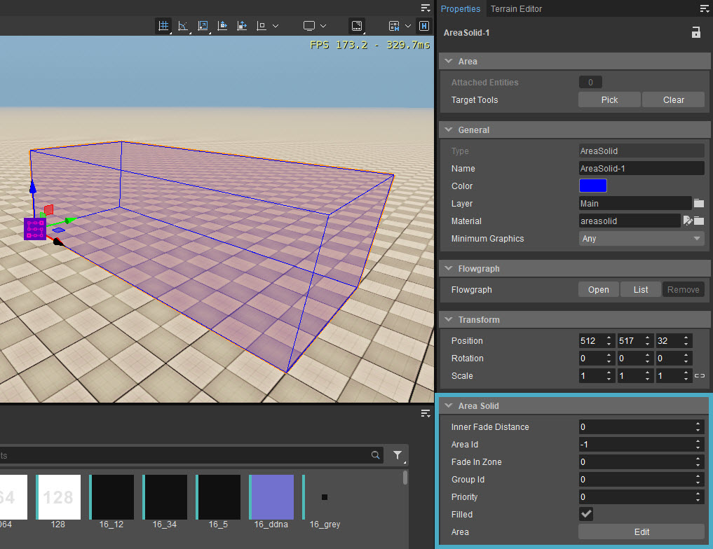

Обзор
Area Solid предназначен для определения сложного диапазона звуковых препятствий с помощью Designer Tool.

Свойства
Недвижимость | Описание |
|---|---|
Внутреннее расстояние затухания | Это значение (указанное в метрах) определяет, насколько звук окружения может сливаться с формой с более высоким приоритетом. |
Идентификатор области | Устанавливает ID области, чтобы области с другим ID могли перекрываться. |
Затухание в зоне | Указывает в метрах размер зоны вокруг рамки, которая используется для усиления эффекта, прикрепленного к рамке. Только когда игрок находится внутри поля, эффект отображается на уровне 100%, в начале зоны Fade In Zone он отображается на уровне 0%. |
Идентификатор группы | Настраивает группу ID области, чтобы области с другой группой ID могли перекрываться. |
Приоритет | Определяет приоритет, поэтому области с более высоким приоритетом будут обрабатываться в первую очередь. |
Заполненный | Просто для видимости в редакторе эта опция определяет, должна ли область отображаться как заполненная или нет. |
Площадь | Открывает Designer Tool который можно использовать для редактирования формы Area Solid. когда Редактировать кнопка нажата. |
При редактировании формы или области можно привязать вершину к местности или физическим объектам, используя Ctrl + Shift + LMB.
Это справедливо для всех объектов Area, кроме окклюдеров.